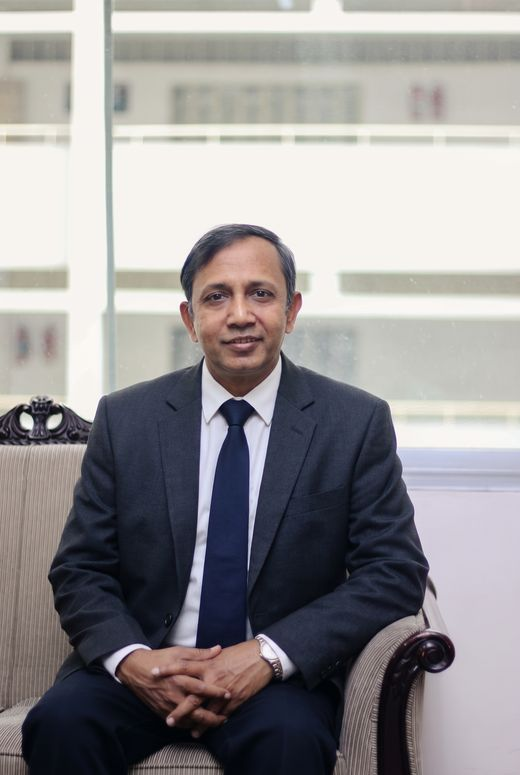

M.A., University of Rajshahi
Dialect of Netrokona
A study of the spoken Bangla of Netrokona and how it differs from the standard language.
Associate Professor and Head, Department of Bangla, Rajuk Uttara Model College, Dhaka
Teaching Bangla language and literature since 1994. Researcher of Bangladeshi drama, poet, and reciter.

Touch or move across the falling letters.
About
For more than three decades, he has taught Bangla at college level, led a department, and kept writing, researching and reciting alongside the classroom.
His research follows Bangladeshi drama: the plays of Abdullah Al Mamun, and the lives of women on the Bangladeshi stage from 1971 to 2000. He has written textbooks approved by the National Curriculum and Textbook Board and a standard Bangla pronunciation dictionary for children.
Outside teaching, he founded the Utsa Abritti & Culture Academy in 2005 and has trained students in elocution and recitation ever since. He was named Best Teacher of Uttara Thana three years running, from 2019 to 2021.
Journey, from school to today
Uttarkhan Union High School, Dhaka. Second Division.
Bhawal Badre Alam Government College, Gazipur. Second Division.
University of Rajshahi. Upper Second Class.
University of Rajshahi. Upper Second Class. Research on the dialect of Netrokona.
Sardar Suruzzaman Women Degree College
Mollartek Udayan School & College
Rajuk Uttara Model College, Dhaka
Founder-President since its first day.
Published on 21 February 2006.
Abdullah Al Mamun’s Plays: Themes and Presentation.
Women’s Life in Bangladeshi Drama (1971–2000).
Abdullah Al Mamun’s Plays: Themes and Context (Bangla Academy), and Bangla Language Grammar and Construction (Akkharpatra), an NCTB-approved textbook for Classes XI–XII.
Coordinated the compilation of the Class 6 Bangla first paper for the NCTB.
Shabdaghar, December 2017.
Awarded three years in a row: 2019, 2020 and 2021.
Shabdaghar, January 2020.
Teacher Representative, Rajuk Uttara Model College.
Panjeri Publications, 21 February 2026.
Research
M.A., University of Rajshahi
A study of the spoken Bangla of Netrokona and how it differs from the standard language.
M.Phil., University of Rajshahi, 2006
আবদুল্লাহ আল-মামুনের নাটক: বিষয় ও পরিচর্যা
The themes of Abdullah Al Mamun’s plays and how they are presented on stage.
Ph.D., University of Rajshahi, 2011
বাংলাদেশের নাটকে নারী জীবন: ১৯৭১–২০০০
How Bangladeshi playwrights portrayed women’s lives in the three decades after independence.
Books, from the shelf. Tap a spine to open it.
A collection of his poems, published on International Mother Language Day.
Recitation and cultural work
From “Bidrohi” by Kazi Nazrul Islam (1922). Press play to hear the lines.
Founded the academy in 2005 and has led it since.
Trains students in recitation and is an approved presenter.
Registered programme presenter at Rajshahi Radio.
Six years as a cultural worker with the recitation organisation: three on its executive committee and three as anchor-organiser.
Serves as its editor.
Prizes in college and university competitions for his own poems and short stories, and songs at musical events.
Recognition
Named the thana-level Best Teacher three years in a row.
Ask the console. Type a command, in English or Bangla.
Contact